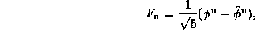

Data Structures and Algorithms
with Object-Oriented Design Patterns in Java
Data Structures and Algorithms
with Object-Oriented Design Patterns in JavaThe final variation of hashing to be considered here is called the Fibonacci hashing method . In fact, Fibonacci hashing is exactly the multiplication hashing method discussed in the preceding section using a very special value for a. The value we choose is closely related to the number called the golden ratio.
The golden ratio is defined as follows: Given two positive numbers x and y, the ratio is the golden ratio if the ratio of x to y is the same as that of x+y to x. The value of the golden ratio can be determined as follows:
There is an intimate relationship between the golden ratio and the
Fibonacci numbers .
In Section  it was shown that the
it was shown that the  Fibonacci
number is given by
Fibonacci
number is given by

where  and
and  !
!
The Fibonacci hashing method is essentially the multiplication hashing method in which the constant a is chosen as the integer that is relatively prime to W which is closest to . The following table gives suitable values of a for various word sizes.
| W | |
| 40503 | |
| 2654435769 | |
| 11400714819323198485 |
Why is special?
It has to do with what happens to consecutive keys
when they are hashed using the multiplicative method.
As shown in Figure ,
consecutive keys are spread out quite nicely.
In fact, when we use to hash consecutive keys,
the hash value for each subsequent key falls
in between the two widest spaced hash values already computed.
Furthermore, it is a property of the golden ratio, ,
that each subsequent hash value divides the interval into which it falls
according to the golden ratio!
 Copyright © 1998 by Bruno R. Preiss, P.Eng. All rights reserved.
Copyright © 1998 by Bruno R. Preiss, P.Eng. All rights reserved.